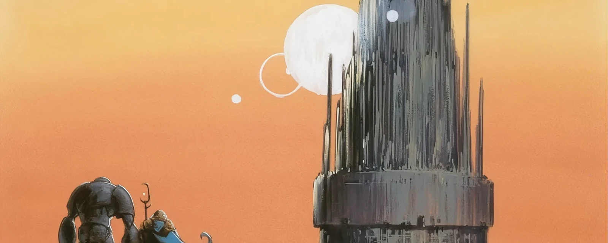

Modern
Cos'è il Modern?
Questo formato amatissimo si basa su una regola fondamentale: per poter essere inserita nel tuo mazzo, una carta deve essere stata stampata in un'espansione legale in Standard a partire dall'Ottava Edizione in poi, oppure in set speciali dedicati come la serie Modern Horizons. Questo crea un bacino di carte enorme che ti permette di giocare con alcune delle magie più potenti e iconiche degli ultimi vent'anni di Magic.
 60
60
 2
2
 20 min
20 min
Costruzione del Mazzo
Seguendo le linee guida classiche dei formati Constructed, il tuo mazzo principale dovrà essere composto da un minimo di 60 carte. Avrai anche a disposizione una sideboard (panchina) di 15 carte, fondamentale per adattare la tua strategia durante i match al meglio delle tre partite. Fatta eccezione per le terre base, il limite massimo per ogni singola carta è di quattro copie. Ricorda sempre di consultare la lista ufficiale delle carte bandite per assicurarti che il tuo mazzo sia legale!

Perché Scegliere il Modern?
Il Modern ha conquistato una vastissima fetta della community grazie a tre pilastri fondamentali:
- Potenza ed Esplosività: Grazie all'immenso pool di carte a disposizione, il formato permette di utilizzare interazioni incredibilmente forti. Il livello di gioco è veloce e spietato, offrendo un'esperienza ad altissima tensione fin dai primissimi turni.
- Varietà del Metagame: Vent'anni di espansioni si traducono in una diversità di mazzi ineguagliabile. Che tu preferisca strategie proattive, di controllo assoluto o combo intricate, nel Modern troverai sempre un archetipo che si adatta perfettamente al tuo stile di gioco.
- Nessuna Rotazione: Trattandosi di un formato non-rotante, le tue carte non "scadranno" mai uscendo dallo Standard. Una volta costruito l'investimento per il tuo mazzo preferito, potrai usarlo per anni (salvo eventuali ban mirati per mantenere l'equilibrio del formato).

Archetipi Storici
L'altissimo livello di potenza permette al metagame di esprimere ogni tipo di macro-strategia: Aggro, Midrange, Control o Combo. Ecco alcuni dei mazzi più iconici:
Tron (Incolore/Verde): L'obiettivo è inarrestabile. Consiste nell'assemblare rapidamente le famose tre terre del tracciato di "Urza" per generare una quantità immensa di mana fin dai primi turni, calando così minacce titaniche e planeswalker devastanti.

Izzet Murktide / Control (Blu/Rosso): Un mazzo estremamente efficiente basato sul vantaggio tempo e sul controllo. Sfrutta rimozioni, contromagie a basso costo e peschini per dominare la partita e proteggere creature evasive e letali.

Burn (Rosso/Bianco): L'obiettivo è semplice e diretto. Azzerare i 20 punti vita dell'avversario il più velocemente possibile lanciando continue raffiche di magie di danno diretto, accompagnate da creature rapide e aggressive.

Pronto a scendere in campo?
Questo formato dimostra perfettamente il fascino, la complessità e la pura adrenalina della storia recente di Magic. Che tu sia un veterano in cerca di sfide al cardiopalma o un giocatore pronto a fare il grande salto nel mondo competitivo, raduna le tue fetchland, studia le sinergie migliori e unisciti a una delle community più grandi e appassionate del Multiverso!